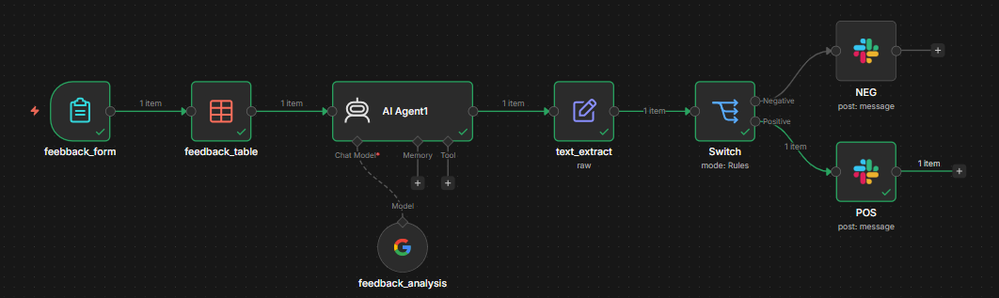

Automation · n8n
Automated Feedback Classifier
An n8n workflow that reads each customer feedback entry, lets Gemini classify its sentiment and topic, and posts it to the matching Slack channel.
Scenario
A company collects about 200 feedback submissions a month: reviews and support tickets. A CRM manager reads, tags and forwards them by hand, which takes about 4 hours a week.
Entries wait in a central table for days. Negative feedback sits in the same queue as positive feedback, so customers at risk of churning wait as long as everyone else.
Workflow

Six nodes
- Feedback formA customer submits feedback through an n8n form.
- Feedback tableThe entry is stored, so every submission is kept, whatever its sentiment.
- AI agent (Gemini)Gemini returns three fields: the sentiment, a category and a one-sentence summary.
- Text extractPulls the two fields out of Gemini's answer so the next node can use them.
- SwitchRoutes by rule: negative to one branch, positive to the other.
- SlackPosts negative entries to #urgent-alerts, and positive ones to #customer-wins.
The AI Agent step
The agent prompt asks Gemini to answer in a fixed JSON format with three fields: sentiment, category and a one-sentence summary. With a fixed format, the text-extract and Switch nodes read the answer the same way every time.
Show one example
Input
Output posted to #urgent-alerts
What I'd change: I didn't give Gemini a fixed list of categories, so it made up its own: "Import Tool" instead of "Bug", "Quality and Customer Service" instead of "Praise". The summaries were accurate, but labels that vary are hard to count or filter. Next time, I'd give the prompt a fixed category list.
Estimated impact
These are estimates built on the task brief, not measured results. The workflow alerts the team; a person still writes the reply.